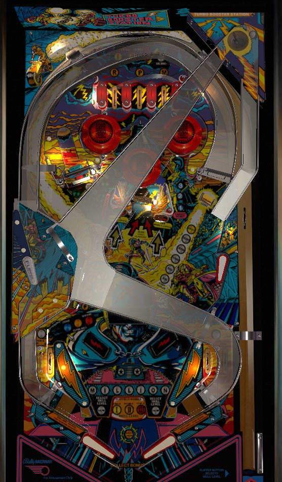

At the start of the game, always press the right flipper two times before plunging ball 1 to start the game in Level III. Level III makes certain features harder to attain than Level I or Level II, but Level III comes with a permanent 3x playfield multiplier that affects all scoring in the game. Triple all scoring is far more helpful than easier feature rules. During gameplay, focus on right ramp -> side ramp combos to spot letters in Million, then score the aforementioned Million- which is tripled to 3,000,000 points in Level III mode.
Before your ball 1 plunge, select whether you want to play on Skill Level !, II, or III by pressing the right flipper before launching the ball. I'll help you out: always play on Skill Level III. Your skill level corresponds to the playfield multiplier applied to all scoring over the course of the entire game: 1x, 2x, or 3x. Increased skill levels and playfield multipliers apply additional rules or time limits to most features, but you're still very likely to get more points from the 3x playfield multiplier regardless. Throughout this guide, scores are listed assuming a playfield multiplier of 1x. If you play on Skill Level III, all scoring values listed in this guide are tripled.
When the ball is fed to the shooter lane, the red and blue lights on the shoulders and visor of the motorcyclist on the playfield art will flash in sequence. Triggering the switch in the shooter lane about 2/3 of the way up the playfield when the blue visor light is lit scores the Skill Shot, worth 50,000 points times playfield multiplier. The skill shot is on a time limit: it expires completely after about 11 seconds on ball 1 and after about 6 seconds on all other balls. In a multiplayer game, pay attention to when it's about to be your turn and don't dilly-dally or lollygag walking up to the machine. Also, don't let the timed skill shot cause you to forget to change your desired Skill Level before you plunge on ball 1.
Make a flashing top lane to score 15,000 points, unlight that lane, and advance the corresponding bumper. Unlit top lanes score 5,000 points. Bumpers score 100 points when not lit, and can be advanced first to 1,000 points when lit, then to 3,000 points when flashing.
On Skill Level I, all 3 top lanes start flashing, and you can use lane change to move the locations of the lit lanes by pressing the right flipper.
On Skill Level II, lane change is not available, and you must spell R-P-M from left to right.
On Skill Level III, you still need to spell RPM in order and there is still no lane change, but you will also lose credit for one top lane every 10, 20, 30, or 40 seconds based on game settings.
Completing the RPM top lanes lights the upper left saucer for Collect Bonus, which scores 10,000 points for each currently lit Lightning insert in the lower left. If RPM is completed when Collect Bonus is already lit, a white light will appear above the top lanes; further completions of RPM before scoring the Collect Bonus score 50,000 points each. Shooting the upper left saucer and scoring the Collect Bonus will extinguish the white light above the top lanes.
In front of the right ramp is a drop target that scores 5,000 points.
On Skill Level I, once this target is down, it stays down for the rest of the ball.
On Skill Level II, the drop target will re-raise after making a right ramp -> side ramp combo.
On Skill Level III, a ramp combo still re-raises the target, but the target will also re-raise on its own after 9, 15, 21, or 27 seconds based on game settings.
A precise shot can go up the ramp without knocking down the drop target first.
Simply entering the ramp scores and advances the ramp value in the sequence 100 - 300 - 500 - 1,000 - 3,000 - 5,000. If the ramp value is advanced high enough- which can be 500, 1,000, 3,000, or 5,000 depending on your chosen Skill Level and the game settings- you will also spot a letter in **MILLION by entering the ramp. A full shot to the ramp will make it to the mini-flipper in the middle-left. Use this flipper to whack the ball up and right into the Turbo Saucer in the very top right of the game. The Turbo Saucer scores 25,000 points for each currently lit letter in **MILLION, then lights the next letter for you. If **MILLION was already completely spelled when you entered the Turbo Saucer, you'll score 1,000,000 points (and yes, even this gets multiplied by the playfield multiplier from Skill Level, so it really should always be 3,000,000 points!).
If you miss with the upper left flipper entirely, the ball will come to the left flipper. If the ball doesn't make it all the way to the Turbo Saucer and rolls back down, it will likely fall down to the right, and be redirected to the right flipper; whether or not the rollunder gate in front of the upper left flipper allows a second chance depends on your Skill Level and how many **MILLION letters are lit. A successful shot to the Turbo Saucer will be fed to the upper right flipper.
There are 3 standup targets in the center of the playfield: two conventional round targets on the left and right of the bank, and a large pad target between and slightly behind the other two. The goal is to hit the two front targets when flashing to qualify the back target, then hit the back target when flashing afterward. Front targets score 3,000 when flashing and 2,000 when unlit; the back target scores 25,000 when flashing and 15,000 when unlit. Hitting the back target when it is flashing also spots anywhere from 0 to 3 letters in **MILLION for you depending on your chosen Skill Level and operator settings.
On Skill Level I, there is no time limit on the center standup targets, and you can hit the two front targets in either order.
On Skill Level II, you must hit targets in the order of left, then right, then center, and there is still no time limit.
On Skill Level III, you must hit the targets in the same order as Skill Level II, but there is also a timer of 10, 20, 30, or 40 seconds (operator setting: same as top lanes), and letting the timer expire will undo credit for one shot in the left-right-center sequence.
There are 4 standup targets in the lower left. Hit a flashing target to light it. Targets score 3,000 when flashing, 2,000 when solidly lit, and 100 when unlit. Complete the Lightning targets by hitting the middle two targets twice each and the outer two targets once each to score and advance the lit value displayed just below the Lightning bank.
On Skill Level I, you can collect the 6 targets in any order, and the completion bonus will never increase past the lowest level, which is 25,000 points.
On Skill Level II, you must collect the targets in order: if the targets were numbered 1-2-3-4 from bottom to top, the sequence would be 1-2-3-4-2-3. Also, Skill Level II means that completions of the Lightning targets score 25,000 points the first time, an extra ball the second time, and 25,000 points after that.
On Skill Level III, you must collect the targets in the same order as Skill Level II, but the same 10, 20, 30, or 40 second timer discussed before will take away credit for one target. Completions of the Lightning targets on Skill Level III score 25,000, then extra ball, then Special, then a repeatable 25,000 thereafter.
To my knowledge, only 1 extra ball and 1 special can be earned from this feature per game, no matter what Skill Level you chose.
Spins of the spinner advance the green numbered lights in front of the spinner. It takes 1, 2, or 3 spins to light the next number in the sequence depending on whether you are on Skill Level I, II, or III. Each spin scores 1,000 points. Landing in the saucer behind the spinner scores 1,000 points for each green number lit. If you advance past #8, a white light labelled Gate Open will be turned on, which indicates that the next shot to the saucer will also open one of the game's two out lane gates.
On Skill Level I: both out lane gates are open at the start of the game, one out lane gate is opened for free at the start of each other ball, and going through an out lane gate closes that gate only.
On Skill Level II: neither out lane gate is ever opened for free, and using a gate closes that gate only.
On Skill Level III: neither out lane gate is ever opened for free, and using either gate closes both of them.
The upper left saucer can also be lit for Collect Bonus by completing the RPM top lanes. This "collect bonus" seems to only be concerned with the Lightning targets, and gives 10,000 points for each Lightning insert that is currently solidly lit.
Motordome has a conventional in/out lane setup. In lanes always score 5,000 points. Out lanes have a gate that redirects a ball to the in lane towards the flippers one time; open a gate by advancing the spinner fully, then shooting the upper left saucer. Out lanes score 3,000 points when their gate is open and 1,000 points if not.
End of ball bonus consists solely of 10,000 points per letter in **MILLION that is currently lit, times the playfield multiplier from your chosen Skill Level.
I am not sure how many points extra ball and special are worth in competition/novelty play- other Bally games from around the same time as Motordome have extra balls worth 25,000 points and specials worth 50,000.
The RPM top lanes, spinner lights, center standup target lights, and lit Lightning inserts can all independently be set to carry over from ball to ball or be reset after every turn.
The slingshots near the flippers can be disabled outright.
The game can be set to provide anywhere from 0 to 3 tilt warnings.